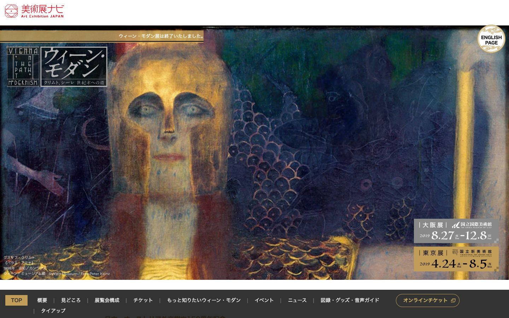

References / Website / 376
Vienna on the Path to Modernism exhibition website
The Japanese site for the 2019 exhibition Wien Modern sets its English title in a framed block of Secession-style capitals, with gold date panels over a Klimt painting.
- Source
- artexhibition.jp: ウィーン・モダン クリムト、シーレ 世紀末への道
- Creator
- Art Exhibition Japan (美術展ナビ)
- Style
- Vienna Secession (agent-proposed, not yet reviewed by a person)
- Moods
- Refined, geometric, elegant
- Evidence
- Captured with
tools/capture.mjs(headless Chrome, 1440 × 900) on 28 September 2026 and inspected. Nothing covers the page. The exhibition closed in December 2019; the site is kept as an archive. The measurement covers up to four screens. - Reviewed
- Rights
- Third-party work, stored with credit for commentary. License: unverified. Rights policy
Context
The exhibition “Vienna on the Path to Modernism” (ウィーン・モダン クリムト、シーレ 世紀末への道) ran at the National Art Center, Tokyo, from 24 April to 5 August 2019, and at the National Museum of Art, Osaka, from 27 August to 8 December 2019. The National Art Center, Tokyo.
Observed
- At the upper left, the English title “VIENNA ON THE PATH TO MODERNISM” is set in a thin-ruled rectangle: “VIENNA” across the top, “ON”, “THE”, “PATH”, and “TO” stacked in narrow columns, and “MODERNISM” across the bottom, with small dots between words.
- The capitals are thin and geometric; the O of “MODERNISM” is drawn small and raised, as in Secession lettering.
- Beside it, the Japanese title sits in a second ruled box of the same height.
- The background is Klimt’s painting Pallas Athene (1898), cropped to the full width, with a gold helmet and a dark blue ground.
- At the lower right, two panels in gray and gold give the Osaka and Tokyo dates in large serif figures, each with a small checkered square at one corner.
- A gold rule strip runs across the upper left, and a dark bar with a gold-outlined ticket button carries the navigation at the bottom.
Why it belongs
The site uses the style as a brand for the exhibition: the lettering, the ruled boxes, the gold, and the small checkered corners come from Secession graphics, and the rest is a standard museum layout.
Measured: square corners (radius 0), one hue, no heading tracking, and a surface pattern share of 0.19 pass. Most text is Japanese, so type.uppercaseShare (0.03) does not apply, and the text is not centered (type.centerShare 0.19).
Borrow
Stack short words in narrow columns inside a ruled rectangle, with full-width words above and below, to make a square title block.
Mark the corner of an information panel with a small checkered square.
Measured
Machine-extracted by tools/extract-traits.js on . Full measurement.
- Type families
- ヒラギノ角ゴ Pro W3 (90%), Montserrat (10%), -apple-system (1%)
- Type scale ratio
- 1.14
- Median radius
- 0 px
- Mean chroma
- 0.03
- Palette
- #ffffff 70%
- #000000 13%
- #3c321e 10%
- #c29d59 4%
- #555555 1%
- #f9f5ee 1%
- #999999 0%
- #333333 0%

